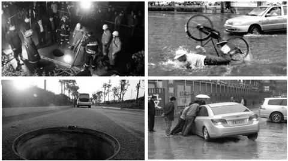
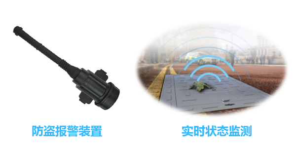
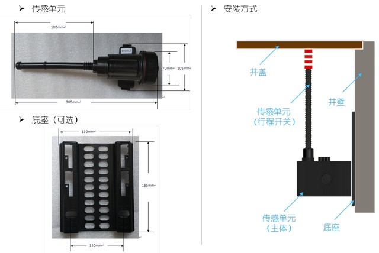
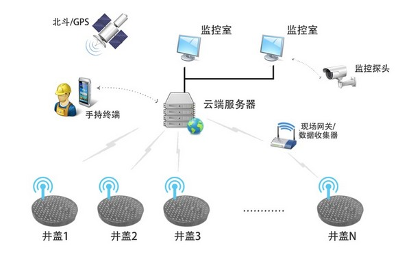
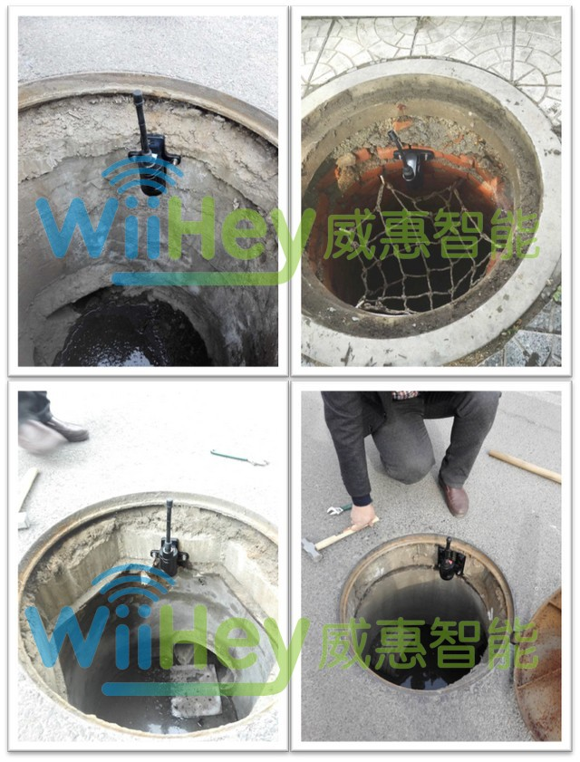

地井井盖防盗监测
概述
一个地井井盖25公斤，主要由铸铁材料制成，偷盗者贩卖的获利可观，所以井盖被盗事件时有发生，对人民群众的人身安全造成危害。

以上海为例，城市的上水、上煤、电话、电缆、信息等共有地井井盖数十万只，如果某个井盖被盗，导致供水、供气、供煤、通信等城市命脉被中断，其引发的经济损失难以估量。
井盖防盗难题
- 城市井盖数量庞大，分布极广，人工巡逻难以实施。
- 井盖被盗无法及时获知，因此无法及时更换，影响井内设备正常运行，也给行人造成危害。
- 执法部门无法及时得到警报，无法对不法分子实施有效打击。
井盖防盗新技术
WiiHey使用物联网技术为井盖安装防盗报警装置，解决井盖防盗难题：

(1) 传感器获取状态
为地井安装行程开关传感器，实时获取井盖状态，一旦井盖被非法开启，自动触发报警信息。
(2) 远程发送数据
传感器集成数据通信功能，通过低功耗、远程无线电（2G/3G/4G/NB-IoT）发送数据到移动网络。
(3) 井盖监控中心
监控中心汇总信息，大屏幕展现数据。如果发生报警，系统自动调度现场人员去现场查看情况。
(4) 现场抢修和反馈
工作人员奔赴现场排解问题，通过随身手机终端APP接收和反馈信息。
井盖报警装置的尺寸和安装

系统拓扑结构

业务流程

智慧井盖发展进阶
第1阶段：普通井盖
无任何防盗、监测、远程控制功能。
第2阶段：防盗井盖
通过物联网技术实现防盗报警、远程监测。
第3阶段：多功能井盖
除了防盗，具备多功能的环境监测功能
第4阶段：智慧井盖
融合更多功能，如交通监管、广告井盖、新能源应用，实现智慧城市。
| 参数 | 内容 |
|---|---|
| 默认传感器 | 行程开关传感器 |
| 可支持传感器 | 干簧管、倾角/加速度传感器 |
| 无线通信 | 2G/3G/4G/NB-IoT等 |
| 续航时间 | 5年 |
| 工作温度 | -20°C-+90°C |
| 安装方式 | 螺栓固定 |
| 防水设计 | IP68 |
